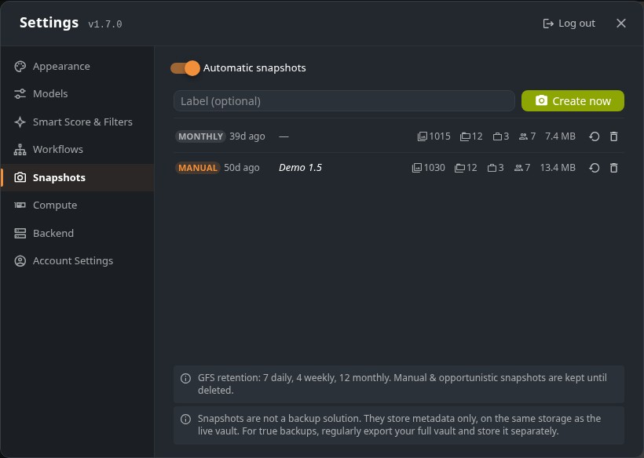

Choose the box that matches how you installed PixlStash and follow the steps to get the latest version.
See automatic snapshots, one-click and selective restore, breadcrumb navigation, drag characters & sets between projects, and the new snapshot API — in one focused walkthrough with screenshots.
Open the What's New page →
pip install
Python virtual environment / PyPI
.venv/bin/activate
.venv\Scripts\activate
pip install --upgrade pixlstash
Stop the running server and start it again with
pixlstash-server (or however you normally launch
it). The new version is active immediately.
Windows installer
One-click installer / .exe bundle
Go to the
latest release on GitHub
and download the Windows .exe installer.
Close the PixlStash server window or stop the background service before running the installer.
Double-click the downloaded installer and follow the prompts. It will replace the existing installation in-place. Your image library and settings are preserved.
Docker
docker-compose or standalone container
CPU
docker pull ghcr.io/pikselkroken/pixlstash:latest
GPU
docker pull ghcr.io/pikselkroken/pixlstash:latest-gpu
docker stop pixlstash && docker rm pixlstash
Then re-run your original docker run command — see
the install guide for
CPU or
GPU inference.
From source
git clone / editable install
cd pixlstash git pull
pip install -e .
cd frontend && npm ci && npm run build
Stop and restart pixlstash-server (or
python -m pixlstash.app) to load the new code.